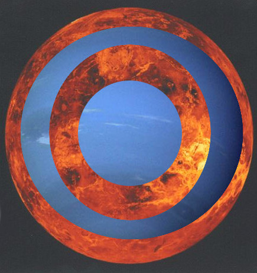
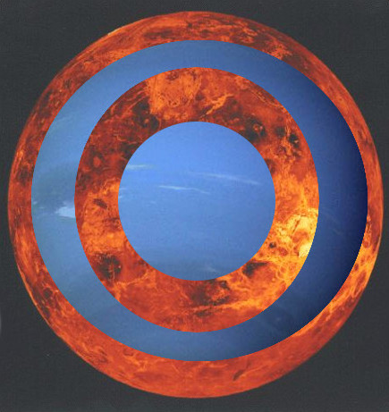

Digital Artwork
These Are some of my pieces of digital art, most were created using the program GIMP, pulled from open source images and edited togeter. One of note is the Beach picture, that didn't have a sun untill I added it. I used a picture of a pineapple ring to get the color, smudged and blended together to create the shape. You can create most anything as long as you have the right source images.
 


The animations below were created in JavaScript.